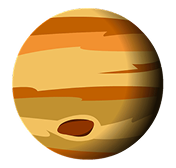

TODO SOBRE JÚPITER 
Júpiter es el planeta más grande del sistema solar, una auténtica gigante gaseosa compuesta principalmente por hidrógeno y helio. Su tamaño es tan colosal que en él cabrían más de 1.300 planetas como la Tierra. Su presencia gravitacional es tan poderosa que actúa como escudo, desviando muchos asteroides y cometas que podrían amenazar a los planetas interiores.
No tiene superficie sólida como los planetas rocosos; lo que vemos es una espesa atmósfera con bandas de nubes y tormentas. La más famosa es la Gran Mancha Roja, una gigantesca tormenta que lleva siglos activa y que supera el tamaño de la Tierra. También posee un fuerte campo magnético y un sistema de anillos muy delgado y tenue.
Júpiter tiene al menos 95 lunas confirmadas, y entre ellas destacan Ganímedes (la luna más grande del sistema solar), Ío (con volcanes activos), Europa (que tiene un océano bajo su superficie helada y es uno de los principales candidatos para albergar vida) y Calisto (antiguo y lleno de cráteres).
A pesar de estar tan lejos, su brillo lo hace visible a simple vista en el cielo nocturno. Para muchas culturas antiguas, Júpiter representaba al dios supremo: protector, poderoso y majestuoso, tal como lo es en el paisaje cósmico.